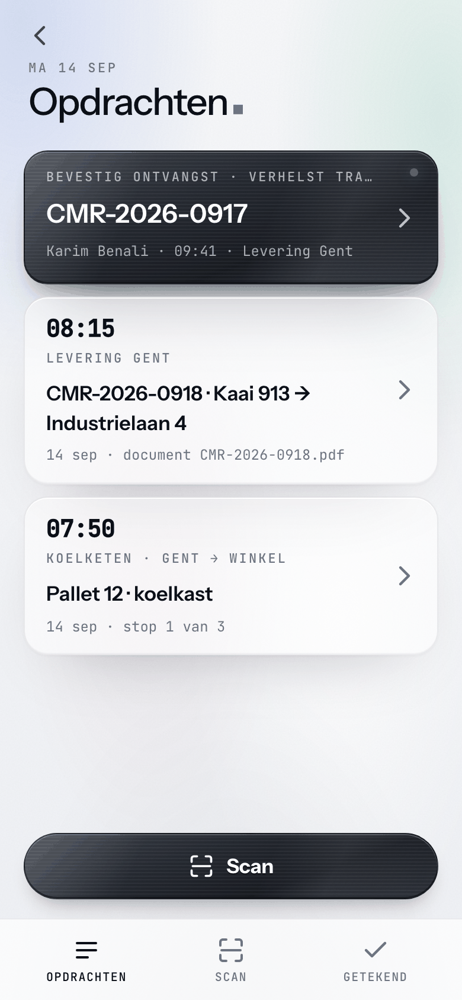
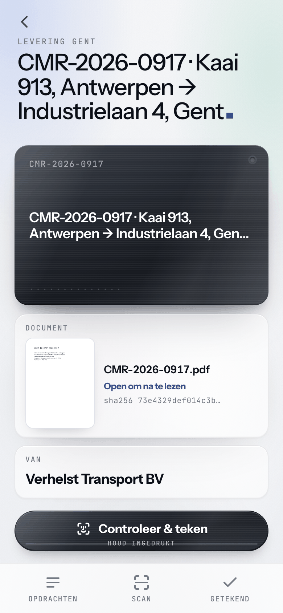
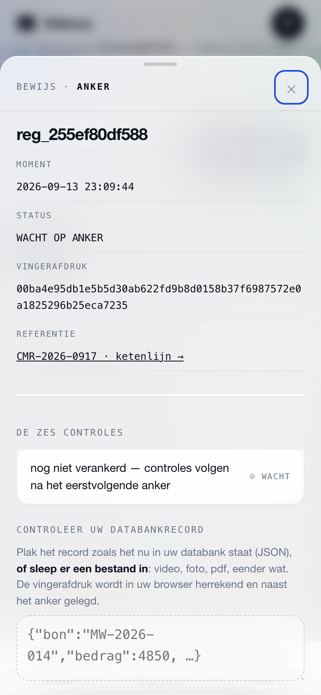
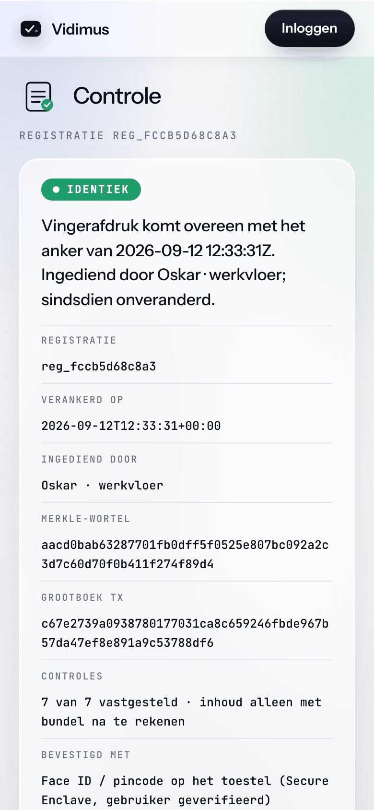

registratie loopt — elke wijziging achteraf is wiskundig uitgesloten
"Er ontbraken drie paletten." — Vidimus legt het moment van aflevering cryptografisch vast: foto, plaats, tijd en wie tekende. Vanaf dat ogenblik kan niemand er nog aan. Ook wij niet.
Vervals het.
01 · DE DEMOGeen animatie — de vingerafdruk wordt live berekend in uw browser, met echte SHA-256. Klik op een waarde. Wijzig ze. Kijk wat er gebeurt.
Aflevering — CMR
Kaai 913, Antwerpen · getekend door chauffeur en ontvanger, elk op eigen toestel
- Afzender
- Verhelst Transport BV
- Ontvanger
- Nova Logistics NV
- Colli
- 26 paletten · zonder voorbehoud
- Afgeleverd
- 4 september 2026 — 15:12
- Plaats · toestel
- 51.2302 N · 4.4160 E · ±6 m
Klik op een waarde en typ — maak van 26 paletten eens 23. Zoals iemand dat weken later zou proberen.
reg_0a4edeb47d59
- Moment
- 2026-09-04 15:13:22Z
- Tijdstempel
- RFC 3161 · Sectigo
- Anker
berekenen…- Huidige inhoud
berekenen…
IDENTIEK
Vingerafdruk komt overeen met anker van 04.09.2026 15:13:22Z
De vingerafdruk komt overeen met een anker. U ziet dat anker: het moment volgens de onafhankelijke tijdstempel, wie tekende, de plaats volgens het toestel.
Geen enkel anker komt overeen. Meer zegt Vidimus niet — niet wat er veranderde, niet door wie. Wijzigt iemand later iets, dan komt de vingerafdruk niet meer overeen. Er bestaat geen "lijkt op".
Vidimus oordeelt niet. Het vergelijkt. Elke registratie krijgt een verificatiepagina die iedereen kan openen — zonder account, zonder ons te moeten geloven.
De aflevering.
02 · HET MOMENTEén sector, één moment: de kade, de lading, de handtekening. Daar begint elke CMR-discussie — en daar eindigt ze. Foto → anker in drie tikken.
FotoTIK 1 · TOESTEL HASHT EN TEKENT
De chauffeur maakt een foto van de lading op de kade. Zijn telefoon berekent de vingerafdruk en tekent het anker met een Ed25519-sleutel die het toestel nooit verlaat.
PlaatsTIK 2 · GPS + NAUWKEURIGHEID · VERPLICHT
Positie én nauwkeurigheid, volgens het toestel, gaan mee in de gehashte inhoud. Geen plaats, geen anker. "51.2302 N · ±6 m" is een bewijselement; "ergens in de haven" is dat niet.
Twee handtekeningenTIK 3 · QR · ELK OP EIGEN TELEFOON
De ontvanger scant de QR en tekent op zijn eigen telefoon, met zijn eigen sleutel. Twee partijen, twee toestellen, één anker. Binnen vijf minuten gebundeld en van een tijdstempel voorzien.
CMR art. 30 zonder voorbehoud bij aflevering geldt een vermoeden van correcte levering Levering, tijdstip en staat bewijzenAlleen sensordata
SENSOR · API · ELK KWARTIERGeen foto's, geen handtekeningen: alleen de metingen van uw loggers, poorten of weegschalen. Uw systeem stuurt ze door via de API; elke waarde wordt gehasht en per kwartier verankerd. Wat de sensor zag, staat vast — ook als de logger later zoek is.
- Twee loggers, twee waarheden. De ontvanger meet 8,9 °C bij het openen; uw logger zegt 6,1 °C tot aan de aflevering. Wie de CSV het laatst opende, wint.
- Het log leeft in de cloud van de leverancier. Exporteren kan, maar niemand kan bewijzen dat de export is wat de sensor toen zag.
- Gaten en correcties. Een reeks met een uur ontbrekend, een waarde "gecorrigeerd" na kalibratie: achteraf niet meer te onderscheiden van knoeien.
- De claim komt weken later. Tegen dan is de logger hergebruikt, het geheugen overschreven en de chauffeur ergens anders.
- Elke meting een vingerafdruk. Uw systeem POST elke waarde naar de API; Vidimus hasht ze met tijd, sensor-id en referentie, getekend met uw systeemsleutel.
- Per kwartier verankerd. Alle metingen van een kwartier gaan in één Merkle-wortel met een RFC 3161-tijdstempel van een derde. Vanaf dan is geen waarde nog te wijzigen, ook niet door ons.
- Gaten zijn zichtbaar. Ontbreekt een kwartier, dan ontbreekt het anker: de reeks toont zelf waar ze onderbroken was.
- De meter telt per kwartier. Een logger die elke minuut meet, telt voor de prijs als één registratie per kwartier per systeemsleutel. Zie de meter.
POST /ingest
{"stream_id": "str_…", "signer_id": "sgn_…",
"payload": {"sensor": "TL-0917", "temperatuur_c": 4.1,
"ref": "VX-2026-0917", "event": "temperatuur"}}Uw systeem blijft de bron.
PROTOCOL · 3 STAPPENGeen migratie, geen vervanging. Eén dunne laag bovenop wat u al hebt.
Koppelen
01Uw systeem stuurt elke aflevering door via API of webhook. Geen systeem? Dan de app: foto, plaats, handtekening — telefoon en QR, geen installatie.
Verankeren
02Gehasht, getekend, per batch gebundeld en van een onafhankelijk tijdstempel voorzien. Daarna in een grootboek waar alleen iets bij kan, nooit iets af — ook niet door ons.
Verifiëren
03De tegenpartij, een verzekeraar, een rechter — jaren later nog. Verificatiepagina of bewijsbundel met controlescript; het bewijs hangt niet aan ons platform.
Zo ziet het eruit.
03 · DE APPVier schermen: de wallet op de telefoon van de chauffeur, de stroom, het anker als tabel — en de verificatiepagina die uw tegenpartij ziet.




Vier korte video's
UITLEG · 0:50 – 2:00Het waarom in twee minuten, en drie ketens van begin tot eind: vaccin, voeding, sensordata. Zonder tekst in beeld; de stem vertelt.
Wat kost woord tegen woord u?
04 · DE REKENSOMWij beweren niets. Vul uw eigen cijfers in — de som is van u.
Privé — alles wordt in uw browser berekend. Er wordt niets opgeslagen, verstuurd of bijgehouden.
Ter vergelijking: een pilot duurt 30 dagen, vaste prijs € 1 900 — en van elke verankerde aflevering staan inhoud, plaats en moment vast.
Het bewijs, ontleed.
SPECIFICATIE · WAT VANDAAG DRAAITEerlijk over waar we staan is de regel van deze sectie: elke rij hieronder is live. Wat hier niet staat, claimen we niet.
| Wat | Techniek | Toelichting |
|---|---|---|
| wat | SHA-256 | Vingerafdruk over canonieke JSON van de registratie, inclusief de hashes van elke bijlage — de foto's dus ook. |
| wie | Ed25519 + X.509 | Toestelsleutels op de telefoon (WebAuthn/passkey optioneel), plus een X.509-ondertekenaarscertificaat per organisatie. |
| wanneer | RFC 3161 TSA | Tijdstempel van een onafhankelijke derde (Sectigo) — niet onze serverklok bepaalt het moment. |
| waar | GPS + nauwkeurigheid | Positie en foutmarge zoals het toestel ze rapporteert, als deel van de gehashte inhoud. Wij meten niet; wij leggen vast wat het toestel zei. |
| gebundeld | Merkle-root | Per batch één wortel; elk anker bewijst zijn eigen plaats in de batch zonder de andere registraties prijs te geven. |
| keten | Append-only grootboek | Elk record hasht het vorige. Eén gewijzigd record en de keten klopt niet meer — controleerbaar met |
| onafhankelijk | Bewijsbundel | Verificatie-URL plus een bundel met meegeleverd controlescript — verifieerbaar zonder Vidimus, zonder netwerk. Data blijft in de EU. |
Eerlijk over waar we staan: geen blockchain, geen consortiumkanaal, geen gekwalificeerde handtekening. Zodra iets daarvan live is, staat het hier eerst — niet omgekeerd.
Begin met uw stroom
Geef uw stroom een naam. U maakt in één stap uw organisatie aan en staat meteen in de wizard: naam, wie vastlegt, verankeren. Drie minuten.
Betalend vanaf dag één: de pilot van 30 dagen of de aansluiting van € 190 per maand. Liever eerst praten? Plan 15 minuten.
Eén instap. Geen verrassingen.
05 · DE PRIJSPilot
€ 1 900vaste prijs · één stroom · excl. btw · geen verplichting nadien
- Intake van een halve dag, dan uw afleveringen in de app of via API
- Begeleid door wie het gebouwd heeft
- Bewijsbundel en evaluatiegesprek na 30 dagen
€ 190 per maand, 1 000 registraties inbegrepen. Daarboven per registratie — 8, 4 of 2 cent, nooit met een sprong. Partners tekenen gratis mee. Het pilotbedrag wordt bij doorstart verrekend.
De meter, in detail"Wij tekenen met naam en gezicht voor wat we bouwen. U belt niet met een supportdesk — u belt met wie het gebouwd heeft."
Elke pilot persoonlijk begeleid, van eerste koppeling tot eerste anker
Begin met
wat u nooit meer betwist wil zien.
Vijftien minuten, dan weet u of een pilot voor uw afleveringen zin heeft. Daarna dertig dagen, één stroom, vaste prijs.